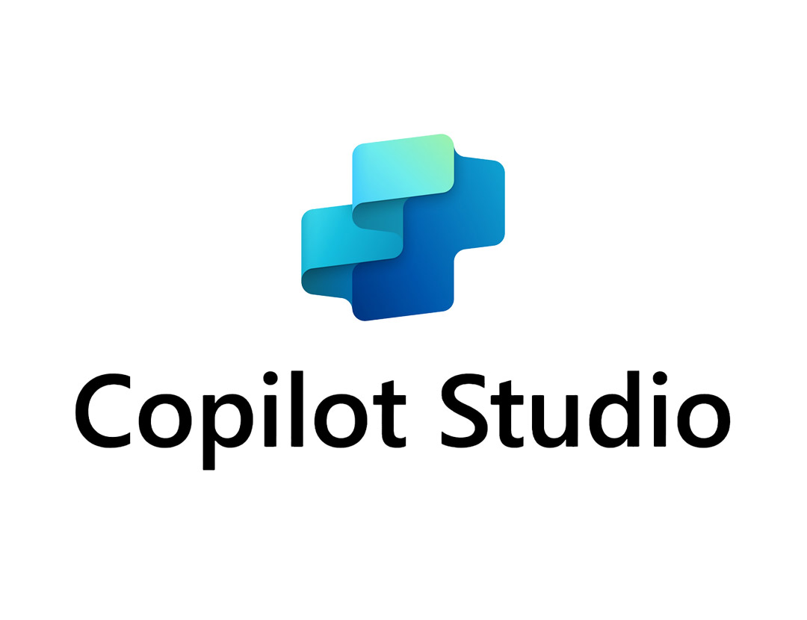

Boston Scientific · Proyecto Integrador · Equipo 01 · 2026
AURA
Automated Unified Reconciliation & Alerting
Sistema de monitoreo contractual preventivo para ISSSTE Hemodinamia — construido sobre Microsoft Dataverse, Power Automate y Copilot Studio.
Power PlatformDataversePower AutomatePower BICopilot Studio
Dra. Fabiola Vásquez
Grupo 60 · Entrega Final
2026
scroll
02 — Intro
El equipo detrás de AURA
Un equipo interdisciplinario que combina visión de negocio, arquitectura de datos y gestión del cambio para transformar la operación contractual de Boston Scientific.
Ereny Aquino
A01532012
Joel Moreno
A01532042
Karina Arenas
A00925381
María Fernanda Tavarez
A01531973
Mario Martínez
A01176162
Pamela Trapero
A01015480
03 — Problema
Un modelo que valida después, no antes
El seguimiento del contrato ISSSTE Hemodinamia depende de conciliaciones tardías y procesos manuales que eliminan toda capacidad de anticipación.
⏱️
Monitoreo dependiente del cierre mensual
El avance frente a máximos contractuales se valida al consolidar conciliaciones mensuales. Aunque el consumo es continuo, la visibilidad estructurada llega al cierre administrativo, cuando ya no hay margen de reacción.
🗂️
Fragmentación de la información contractual
La información está distribuida en distintos archivos, conciliaciones y registros. Sin un repositorio central, los cruces manuales impiden una visión integral actualizada del estado contractual.
📉
Desalineación entre consumo operativo y control contractual
Los consumos clínicos se reportan vía formatos operativos de terceros sin frecuencia homogénea. Solo adquieren carácter oficial al conciliarse al cierre, limitando la capacidad de anticipar agotamientos.
🚨
Activación predominantemente correctiva
Las acciones sobre el contrato se activan una vez consolidada la información del periodo. Esto reduce el margen de anticipación y genera consecuencias como eliminación de líneas excedidas, refacturaciones y pérdida directa de margen.
04 — Arquitectura · Parte A
Tres pilares, un ecosistema
La arquitectura de AURA evolucionó de flujos aislados a una estructura de pilares operativos interdependientes construida sobre Microsoft Dataverse y Power Automate.
01
🔗
Integration Layer
Data Layer
Transforma archivos dispersos en SharePoint en registros gobernados, limpios y validados dentro de Dataverse. Ejecuta ETL con validaciones de integridad estructural antes de cada upsert.
Evalúa umbrales de consumo en tiempo real, detecta desviaciones y decide el nivel de alertamiento necesario. Calcula % consumo vs. máximo contractual y dispara notificaciones via Adaptive Cards en Teams.
Garantiza que cada alerta sea auditable y tenga una respuesta humana formal. El cierre de la alerta ocurre exclusivamente como resultado de una acción estructurada capturada desde Teams.
Validada con la Supervisora de Licitaciones como usuario objetivo. Clasifica el riesgo contractual en niveles progresivos con acciones operativas concretas.
Nivel
Condición
Tipo de Riesgo
Acción Operativa
📉 Bajo consumo
Consumo < mínimo comprometido (≥50% del tiempo)
Incumplimiento mínimo contractual
Verificar con hospital causas de subconsumo. Escalar si persiste.
⚠️ Preventivo
% consumido ≥ 70% del máximo
Exposición financiera incipiente
Monitorear semanalmente. Proyectar fecha estimada de agotamiento.
🔴 Crítico
% consumido ≥ 80% del máximo
Riesgo de exceder el contrato
Escalar al responsable hoy mismo. Evaluar convenio modificatorio.
🚨 Alto crítico
% consumido ≥ 85% del máximo
Riesgo financiero inmediato
Acción inmediata. Contactar Licitaciones, BUM y área legal.
✅ Cumplimiento
% consumido = 100% del máximo
Ejecución completa del contrato
Sin acción urgente. Confirmar cierre contractual.
📈 Extensión
% consumido > 100% y ≤ 120%
Consumo en zona de extensión
Verificar vigencia de convenio modificatorio.
💥 Exceso
% consumido > 120% del máximo
Sobreconsumo fuera del contrato
Detener pedidos. Escalar urgente. Documentar con evidencia.
04 — Arquitectura · Parte C
Power BI + ChatBot Analítico
Dashboard · Power BI
Preguntas de negocio habilitadas
El tablero de monitoreo preventivo está diseñado para responder de forma visual e integrada las principales preguntas de gestión contractual, permitiendo un análisis continuo del desempeño.

ChatBot Analítico · Copilot Studio
Capacidades complementarias
Como complemento al dashboard, el ChatBot permite consultas específicas y respuestas puntuales sin necesidad de navegar dentro del tablero, entregando respuesta inmediata con base en la información más reciente de Dataverse.
Capacidad destacada: consulta directa del estatus puntual de un contrato o clave, entregando respuesta inmediata y precisa — herramienta altamente eficiente para resolver dudas operativas en tiempo real.
Disponible desde el MVP · Solo lectura sobre Dataverse · Responde en español
⚡
Mensaje Ejecutivo Clave
La información no solo es visible —
es accesible,
accionable
y alineada a las necesidades operativas y estratégicas del negocio.
Dashboard · Análisis Agregado
Analiza, monitorea y detecta patrones de riesgo a nivel de portafolio. Visibilidad continua del estado contractual.
ChatBot · Consulta Puntual
Acceso inmediato a información específica para decisiones rápidas. Sin necesidad de navegar el tablero.
05 — Demo
AURA en acción
Demostración en vivo del sistema: flujo completo desde la carga del archivo de consumo semanal hasta la notificación en Teams y la consulta al agente conversacional.
06 — Business Case · Parte A
Exposición financiera cuantificada
305 archivos de consumo semanal (dic 2024–abr 2026). $957.6M MXN en portafolio contractual activo. 48 SKUs monitoreados en tres contratos.
El valor de AURA no reside en la visibilidad que genera, sino en la capacidad de acción que habilita antes de que el riesgo se materialice.
🛡️
Protección del revenue mínimo
Los $13.1M de exposición en 210022MC son el estado actual de un problema estructural. AURA convierte ese dato invisible en una palanca de gestión comercial accionable con semanas de anticipación.
🔐
Contención del exceso antes de que sea irrecuperable
Las alertas al 70%, 80% y 85% interceptan la curva exponencial del overconsumption antes de que cruce el umbral de lo irrecuperable, habilitando decisiones como redirección de demanda o bloqueo preventivo.
📈
Captura de la ventana de ampliación
Detectar el 80–85% del máximo no es señal de riesgo únicamente: es una oportunidad de negocio. En 240181MC ($582.4M portafolio), un 20% adicional representa hasta $116.5M MXN en revenue potencial.
⚡
Escalabilidad sin inversión adicional
AURA es un patrón arquitectónico replicable. Cargar la cédula de un nuevo contrato activa las 7 alertas desde el día 1, sin desarrollo adicional. Hoy monitorea $957.6M MXN; esa cifra puede duplicarse.
💚
Zero Cost de activación
AURA opera íntegramente sobre licencias de Microsoft 365 y Power Platform que Boston Scientific ya tiene contratadas. La inversión incremental requerida para activar el sistema en producción es cero. Frente a una exposición identificada de $13.1M en el escenario actual y de hasta $108.2M bajo desviaciones no gestionadas, el argumento financiero es directo: el costo de no activar AURA es el riesgo que ya está corriendo.
07 — Change Management · Parte A
Playbooks de operación
Tres playbooks complementarios que separan responsabilidades sin fragmentar la solución, materializando la adopción de AURA como modelo preventivo, gobernado y escalable.
📋
Playbook 6.1
Operativo
Field Inventory · Licitaciones
Carga, nombrado y subida de archivos; validación operativa de insumos y seguimiento de confirmaciones y alertas. Asegura que el dato fuente entre correctamente al sistema.
📝
Playbook 6.2
Gestión de Convenio Modificatorio
Licitaciones · BU Manager · Finanzas · Legal
Gestión preventiva y estructurada de la ampliación contractual cuando el consumo alcanza niveles de riesgo. Activación desde el 85%, no al 100%.
📊
Playbook 6.3
Analítico — Power BI
Licitaciones · BU Manager · Analistas
Convierte la información de Dataverse en visibilidad ejecutiva y analítica: semáforo ejecutivo, consumo por clave, directorio de hospitales y alertas enviadas.
Materiales de habilitación por rol
🔧
Especialista Operaciones
Carga, validación, alertas y escalamiento temprano del convenio
💼
Business Unit Manager
Supervisión del P&L, decisiones de ampliación y escalamiento ejecutivo
⚖️
Finanzas · Comercial · Legal
Control, auditoría, validación financiera y blindaje contractual
07 — Change Management · Parte B
Metodología Agile · Scrum
La evolución del sistema requiere un mecanismo formal de mejora continua. Scrum permite ciclos cortos de desarrollo incremental, priorizar por valor de negocio y validar cada entrega con usuarios reales antes de escalar.
🔁
Valor incremental
Cada sprint produce un entregable funcional demostrable.
👤
Validación continua
Ningún sprint concluye sin revisión del usuario de Licitaciones.
🧭
Adaptabilidad
Hallazgos de cada sprint alimentan la priorización del siguiente.
📌
Backlog único
Transparencia total sobre qué se trabaja y en qué orden.
🚀
Transferencia gradual
El equipo funcional gana autonomía progresiva sobre Power Platform.
Program Increment · 10 semanas · Inicio 6 de mayo 2026
Sprint 1
6 may — 17 may
Validación operativa
MVP en producción real. Medición de tiempos de respuesta a alertas. Registro de fricciones en Jira.
1
2
Sprint 2
20 may — 31 may
Optimización
Ajuste de reglas y umbrales. Mejora UX en Teams. Refinamiento de dashboards Power BI.
Sprint 3
3 jun — 14 jun
Discovery de escalabilidad
Análisis de segundo contrato. Variaciones en formatos y reglas de negocio. Spikes técnicos en Jira.
3
4
Sprint 4
17 jun — 28 jun
Framework modular
Dataverse parametrizable por contrato. Separación entre lógica fija y configurable.
Sprint 5
1 jul — 12 jul
Primera replicación
Framework en segundo contrato como prueba de replicabilidad institucional.
5
08 — Siguientes Pasos
De piloto a plataforma
El éxito en ISSSTE Hemodinamia no representa el cierre del proyecto, sino el punto de partida para una estandarización progresiva que impacta transversalmente la gestión institucional de contratos.
1
Integración con datos reales
Avanzar hacia la integración de datos reales (no dummy) dentro del modelo en Dataverse para validar funcionamiento en contexto operativo real, con apoyo del equipo de Boston Scientific.
2
Piloto controlado con el equipo de Licitaciones
Evaluación del funcionamiento integral en entorno real, recopilación de retroalimentación de usuarios operativos e identificación de ajustes antes de una implementación más amplia.
3
Sesiones de validación con áreas involucradas
Confirmar tanto el funcionamiento técnico del sistema como la lógica de negocio de los indicadores y alertas definidos en el modelo con Licitaciones, Comercial y Finanzas.
4
Replicación a nuevos contratos — Framework Modular
Aplicar el framework parametrizable de Dataverse a un segundo contrato institucional. La misma arquitectura puede escalarse sin rediseño estructural, expandiendo el portafolio monitoreado de $957.6M MXN.
5
Evolución hacia Smart Contract Intelligence
Incorporación futura de AI Builder para predicción de agotamiento, integración con SAP mediante conectores estándar de Power Platform y expansión del agente AURA a Microsoft Teams como canal nativo.
Cierre
"El valor no está en validar después, sino en actuar antes."
🛡️
Prevención
🔍
Trazabilidad
⚡
Capacidad de decisión
AURA
Automated Unified Reconciliation & Alerting · Boston Scientific · Equipo 01 · 2026